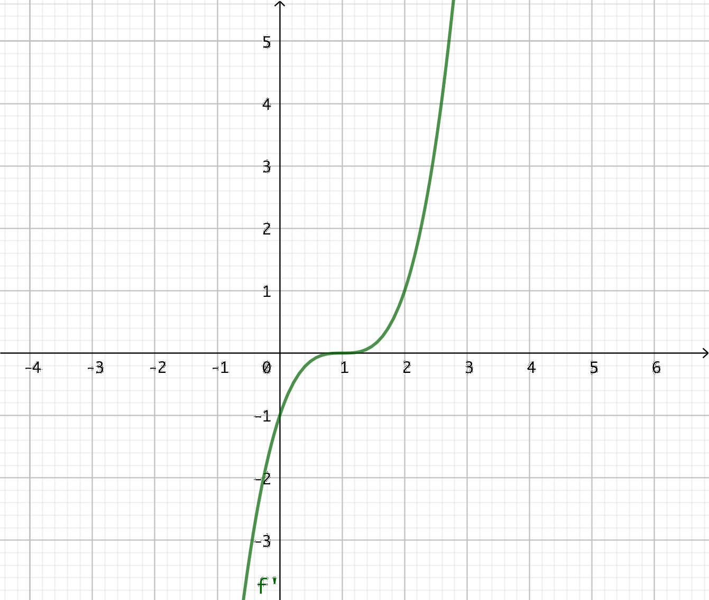
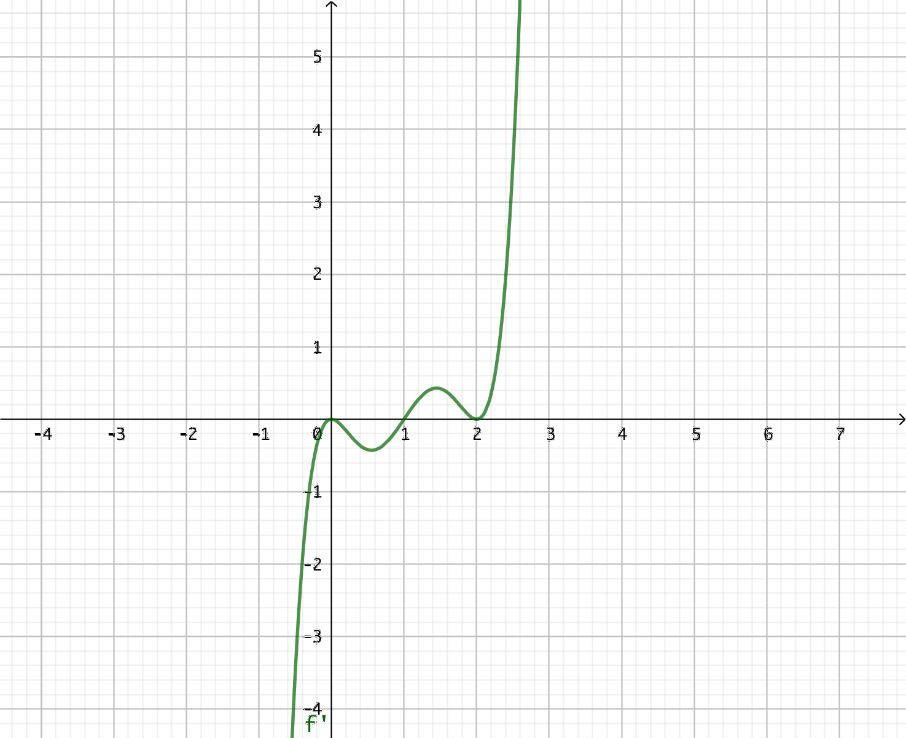
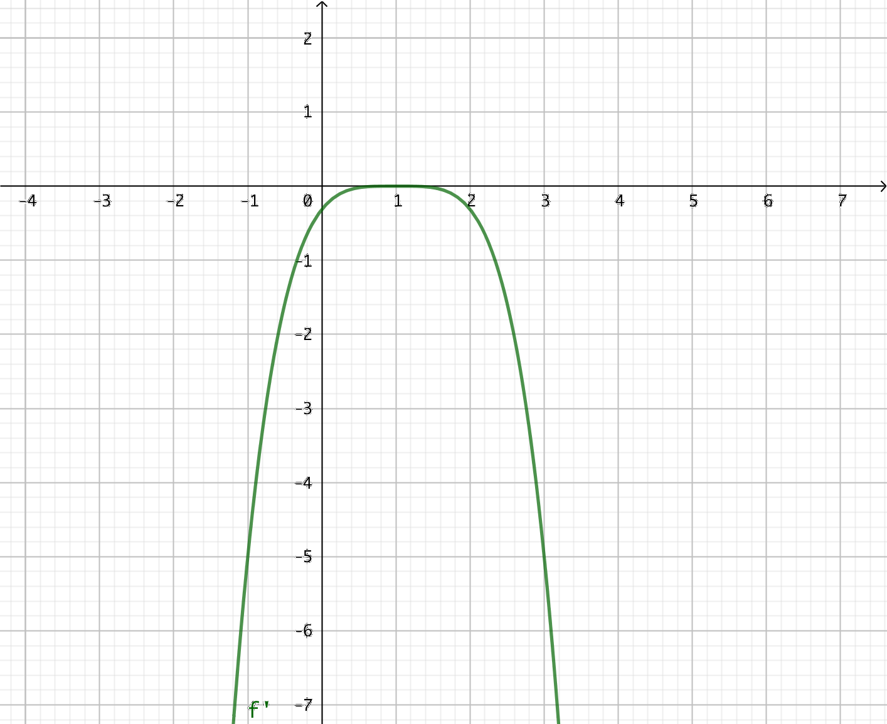

13. Derivatan av potensen av en funktion
Vi undersöker hur kvadraten och kubiken för funktionen \( f \):s derivata ser ut.
När vi har potensfunktioner som är upphöjt till något kan vi derivera dem som \( D f(x)^n = nf(x)^{n-1}\cdot f'(x) \).
Denna regel går också under namnet kedjeregeln.
Exempel 1 Bestäm \( D(x^2-1)^5 \)
Exempel 2 Låt \( f(x)= x^2(2x-1)^4 \). Bestäm \( f'(1) \) och de punkter där funktionen byter riktning.
Uppgifter
- Bestäm
- \( D(x^2-1 )^{10} \)
\( D(x^2-1 )^{10} = 10(x^2-1)^9 \cdot 2x = 20x(x^2-1)^9 \)
- \( D(2x+4 )^{13} \)
\( D(2x+4 )^{13}=13(2x+4)^{12} \cdot 2 = 26(2x+4)^{12} \)
- \( D(3x-1)^4 \)
\( D(3x-1)^4 =4(3x-1)^3 \cdot 3 = 12(3x-1)^3\)
- \( D(x^2-1 )^{10} \)
- Bestäm
- \( D(x-1 )^{2015} \)
\( 2015(x-1)^{2014} \cdot 1= 2015(x-1)^{2014} \)
- \( D( x^2-1)^{2015} \)
\( 2015(x^2-1)^{2014} \cdot 2x = 4030x(x^2-1)^{2014} \)
- \( D( -x^2+1)^{2015} \)
\( 2015(-x^2+1)^{2014} \cdot -2x = -4030x(-x^2+1)^{2014} \)
- \( D(x-1 )^{2015} \)
- Låt \( f(x) = (x^2-3x)^4 \).
- Bestäm nollställena för funktionen.
Nollställena är de punkter då \( f(x)=0 \).
Alltså \( (x^2-3x)^4 = 0 \). Det räcker att undersöka \( x^2-3x=0 \), alltså \( x(x-3)=0 \).
Det sker då \( x = 0 \) eller då \(x-3 = 0 \), alltså då \( x=3 \).
- Bestäm derivatans nollställen
\( f'(x) = 4(x^2-3x)^3(2x-3) \).
Derivatans nollställen, \( 4(x^2-3x)^3(2x-3) = 0 \). Vi utnyttjar nollregeln, \( x^2-3x=0 \) eller \( 2x-3=0 \).
Derivatans nollställen är \( x_1 = 0\), \( x_2 = \dfrac{3}{2} \) och \( x_3 = 3\).
- Bestäm nollställena för funktionen.
- Grafen av derivatafunktionen \( f'(x) \) ser du i bilden nedan.

Vad kan du berätta om funktionen \( f \)?
Derivatafunktionen har nollstället \( x = 1 \).
I intervallen \( x < 1 \) är \( f' \) negativ, då är \( f \) avtagande.
I intervallet \( x > 1 \) är \( f' \) positiv, då är \( f \) växande.
Vi vet att funktionen är avtagande och vid \( x = 1 \) byter funktionen riktning och är växande.
Eftersom \( f' \) är av tredje grad, är \( f \) minst av fjärde grad.
- Grafen av derivatafunktionen \( f'(x) \) ser du i bilden nedan.

Vad kan du berätta om funktionen \( f \)?
Derivatafunktionen har nollställena \( x = 0 \), \( x = 1 \) och \( x = 2 \). Dessutom är punkterna \( x = 0 \) och \( x = 2 \) punkter där vi har ett dubbelnollställe.
I intervallen \( x < 0 \) och \( 0 < x < 1 \) är \( f' \) negativ, då är \( f \) avtagande.
I intervallet \( 1 < x < 2 \) och \( x > 2 \) är \( f' \) positiv, då är \( f \) växande.
Vi vet att funktionen är avtagande, vid \( x = 0 \) har vi en terasspunkt och sedan fortsätter funktionen som avtagande. Vid \( x = 1 \) byter funktionen riktning, är växande, och vid \( x = 2 \) har vi en tresspunkt.
Eftersom \( f' \) är av tredje grad, har 2 st dubbelnollställen är \( f \) minst av sjätte grad.
- Grafen av derivatafunktionen \( f'(x) \) ser du i bilden nedan.

Vad kan du berätta om funktionen \( f \)?
Eftersom derivatafunktionen har nollställena \( x = 0 \), \( x = \dfrac{3}{2} \) och \( x = 3 \) och går från positiv till negativ eller negativ till positiv byter funktionen \( f \) riktning där.
Då \( x < 0 \) och \( \dfrac{3}{2} < x < 3 \) är \( f' \) negativ, då är \( f \) avtagande.
I intervallet \( 0 < x < \dfrac{3}{2} \) och \( x > 3 \) är \( f' \) positiv, då är \( f \) växande.
Eftersom \( f' \) är av tredje grad är \( f \) minst av fjärde grad.
- Grafen av derivatafunktionen \( f'(x) \) ser du i bilden nedan.

Vad kan du berätta om funktionen \( f \)?
Derivatafunktionen har nollstället \( x = 1 \).
Men \( f' \) är negativ i alla punkter utom i \( x = 1 \). Alltså är \( f \) avtagande.
Med andra ord så har vi en strängt avtagande funktion som har en terasspunkt i \( x = 1 \).
Eftersom \( f' \) är en parabel är \( f \) minst en tredjegradsfunktion.
- Vi undersöker funktionen \( f(x)=x^3(2x-1)^5 \).
- Bestäm \( f'(1) \).
För att derivera använder vi oss av produktregeln \( Dfg = f'g+g'f \) och potensregeln \( Df^n = nf^{n-1}f' \).
Derivatafunktionen är \( f'(x)=3x^2(2x-1)^5 + x^3\cdot 5(2x-1)^4\cdot 2 =3x^2(2x-1)^5+10x^3(2x-1)^4 \).
Då är \( f'(1)=13 \).
- Bestäm de punkter där funktionen \( f \) byter riktning.
Vi löser ekvationen \( f'(x)=0 \). För att lätt göra det använder vi oss av faktorisering.
Vi får \( f'(x) = 3x^2(2x-1)^5+10x^3(2x-1)^4 = x^2(2x-1)^4[3(2x-1)+10x] \\ = x^2(2x-1)^4(16x-3) \)
Vi utnyttjar nollregeln, och får rötterna.
Vi får \( x=0, x=\dfrac{1}{2} \) och \( x=\dfrac{3}{16} \).
- Bestäm den punkt där funktionen får sitt minsta värde.
Vi bildar ett teckenschema.
\( \begin{array}{c|ccccccc} & & 0 & & \dfrac{1}{2} & & \dfrac{3}{16} & & \\ \hline x^2 & + & 0 & + & + & + & + & + \\ (2x-1)^4 & + & + & + & 0 & + & + & + \\ 16 x -3 & - & - & - & - & - & 0 & + \\ \hline f'(x) & - & 0 & - & 0 & - & 0 & + \\ f(x) & \searrow & & \searrow & & \searrow & & \nearrow \\ \end{array} \)
Vi har ett minsta värdet i punkten \( x=\dfrac{3}{16} \).
- Bestäm \( f'(1) \).
- Bestäm det största värdet för funktionen \( f(x) = (x-1)(x-2)^2 \) i intervallet \( [1,2] \).
Derivatafunktionen är \( f'(x) = 1 \cdot (x-2)^2 + (x-1)2(x-2) = (x-2)(x-2+2(x-1))= (x-2)(3x-4) \).
Derivatans nollställe \( f'(x)=0 \), alltså \( (x-2)(3x-4)=0 \). Vi delar upp \( x-2 =0 \) och \( 3x-4 = 0\).
Vi får nollställena \( x=\dfrac{4}{3} \) och \( x=2 \).
Då vi söker största och minsta värden i ett intervall hittar vi dem i intervallets änpunkter eller där derivatan får värdet noll.
Alltså:
\( f(1) = 0\)
\( f(\dfrac{4}{3}) = \dfrac{4}{27}\). Här har vi största värdet.
\( f(2) = 0 \)
- Bestäm för funktionen \( f(x) = (x^2-3x+2)^4 \) funktionens och derivatafunktionens nollställen.
Funktionens nollställen är \( (x^2-3x+2)^4 = 0 \Leftrightarrow x^2-3x+2 = 0 \). Andragradsekvationen har rötterna \( x_1 = 1 \) och \( x_2 = 2\). Dessa är funktionens nollställen.
Derivatafunktionen är \( f'(x)=4(x^2-3x+2)^3(2x-3) \).
Derivatafunktionens nollställen får vi med hjälp av nollregeln. Nollställena är \( x^2-3x+2 = 0 \) som har rötterna \( x_1 = 1 \) och \( x_2 = 2\), \( 2x-3 = 0 \Leftrightarrow x=\dfrac{3}{2} \).
- Bestäm för funktionen \( f(x) = (x+1)^2(x-1) \) och dess derivatafunktion deras gemensamma punkter.
Derivatafunktionen är \( f'(x) = 2(x+1)\cdot 1(x-1)+(x+1)^2\cdot 1 = (x+1)[2(x-1)+(x+1)] \\ = (x+1)(3x-1) = 3x^2+2x-1\).
Eller som \( 2(x+1)\cdot 1(x-1)+(x+1)^2\cdot 1 = 2(x^2-1)+(x+1)^2 = 3x^2+2x-1 \).
De gemensamma punkterna
\( \begin{array}{rcl} f(x) & = & f'(x) \\ (x+1)^2(x-1) & = & 3x^2+2x-1 \\ x^3 +x^2-x-1 & = & 3x^2+2x-1 \\ x^3 -2x^2-3x & = & 0 \\ x(x^2 -2x-3) & = & 0 \\ \end{array} \)
Alltså \( x =0 \) eller \( x^2-2x-3 = 0 \) som har rötterna \( x_2 = -1 \) och \( x_3 = 3 \).
Eller som
\( \begin{array}{rcl} f(x) & = & f'(x) \\ (x+1)^2(x-1) & = & (x+1)(3x-1) \\ (x+1)^2(x-1) - (x+1)(3x-1) & = & 0 \\ (x+1)[(x+1)(x-1)-(3x-1)] & = & 0 \\ (x+1)(x^2-1-3x+1) & = & 0 \\ (x+1)(x^2-3x) & = & 0 \\ \end{array} \)
Alltså \( x+1 = 0 \Leftrightarrow x_1 = -1 \) eller \( x^2-3x = 0 \) som har rötterna \( x_2 = 0 \) och \( x_3 = 3 \).
- Bestäm för funktionen \( g(x) = (x+1)^3(2x-1)^2 \) de punkter där funktionen byter riktning och extremvärdena. Är det frågan om lokala eller globala? Utmana dig själv genom att derivera funktionen för hand. Kontrollera deriveringen på räkneprogram.
\( g'(x) = 3(x+1)^2(2x-1)^2 + (x+1)^3\cdot 2(2x-1)\cdot 2 = \\ (x+1)^2[3(2x-1)^2+4(x+1)(2x-1)] = (x+1)^2(2x-1)(6x-3+4x+4) = \\ (x+1)^2(2x-1)(10x+1)\)
Derivatans nollställen: \( g'(x) = 0 \) då \( x+1 = 0 \Leftrightarrow x=-1 \), \( 2x-1 =0 \Leftrightarrow x = \dfrac{1}{2}\), eller \( 10x+1 = 0 \Leftrightarrow x = -\dfrac{1}{10} \).
Vi gör ett teckenschema:
\( \begin{array}{c|cccccc} & & -1 & & -\dfrac{1}{10} & & \dfrac{1}{2} \\ \hline (x+1)^2 & + & 0 & + & + & + & + & + \\ 2x-1 & - & - & - & - & - & 0 & + \\ 10x+1 & - & - & - & 0 & + & + & + \\ \hline g'(x) & + & 0 & + & 0 & - & 0 & + \\ g(x) & \nearrow & & \nearrow & & \searrow & & \nearrow \\ \end{array} \)
I \( x = -1 \) har vi en terasspunkt.
I \( x = -\dfrac{1}{10} \) har vi ett lokalt maximum. Värdet är \( g(-\dfrac{1}{10}) = \dfrac{6561}{6250} \).
I \( x = \dfrac{1}{2} \) har vi ett lokalt minimum. Värdet är \( g(\dfrac{1}{2}) = 0\).
- Talen \( m \) och \( n \) är positiva heltal. Vi vilken punkt i intervallet \( [0,1] \) är funktionsvärdet för funktionen \( f(x) = x^m(1-x)^n \) som störst? Vilket är det största värdet?
Derivera modigt och jobba sedan vidare.
Derivatafunktionen är \( f'(x) = mx^{m-1}(1-x)^n + x^m\cdot n(1-x)^{n-1}(-1) = \\ x^{m-1}(1-x)^{n-1} [m(1-x)-xn] = x^{m-1}(1-x)^{n-1}(m-xm-xn) \)
Derivatans nollställe, \( f'(x) = 0\), alltså \( x^{m-1}(1-x)^{n-1}(m-xm-xn) = 0 \). Vi får \( x^{m-1}=0 \Leftrightarrow x = 0 \), \( (1-x)^{n-1} = 0 \Leftrightarrow 1-x = 0 \Leftrightarrow x=1 \) och \( m-xm-xn = 0 \Leftrightarrow x = \dfrac{m}{m+n} \). Eftersom \( m \) och \( n \) är positiva heltal har den sista lösningen ett värde mellan 0 och 1.
Eftersom funktionen är definierad i ett intervall hittar vi dess största och minsta värden i intervallets ändpunkter eller i de punkter där derivatan får värdet noll.
\( f(0) = 0^m(1-0)^n = 0 \).
\( f(\dfrac{m}{m+n}) = (\dfrac{m}{m+n})^m(1-\dfrac{m}{m+n})^n = \dfrac{m^m n^n}{(m+n)^{m+n}} \).
\( f(1) = 1^m(1-1)^n = 0 \).
Strösta värdet är \( \dfrac{m^m n^n}{(m+n)^{m+n}} \).
- Bestäm derivatafunktionen för \( f(x) = \dfrac{1}{\sqrt{1+x^2}} \).
Vid vilka punkter byter funktionen riktning?
Hur kan du skriva en rot med hjälp av en potens? Hur påverkar det att potensen är nere i nämnaren?
Med andra ord, hur kan du skriva \( \dfrac{1}{27} \) som \( 3^{\text{?}} \)?
Vi skriver \( f(x) = \dfrac{1}{\sqrt{1+x^2}} = \dfrac{1}{(1+x^2)^{\frac{1}{2}}} = (1+x^2)^{-\frac{1}{2}} \).
Eftersom vi har ett rationellt uttryck måste vi undersöka definitionsmängden. Nämnaren, \( 1+x^2 \) är alltid \( \geq 0 \).
Derivatafunktionen är \( f'(x) = -\dfrac{1}{2}(1+x^2)^{-\frac{1}{2}-1}\cdot 2x = -x(1+x^2)^{-\frac{3}{2}} = \\ -\dfrac{x}{(1+x^2)^{-\frac{3}{2}}} = -\dfrac{x}{\sqrt{(1+x^2)^3}} = -\dfrac{x}{(1+x^2)\sqrt{1+x^2}} \)
En kvot får värdet 0 då täljaren får värdet noll. Derivatans nollställe är \( x = 0 \).